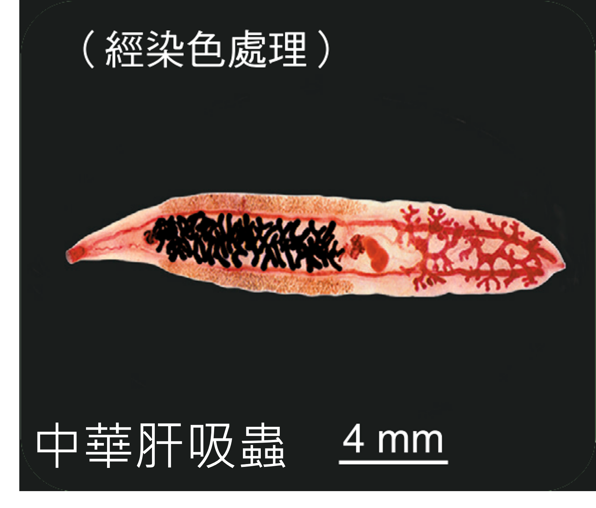
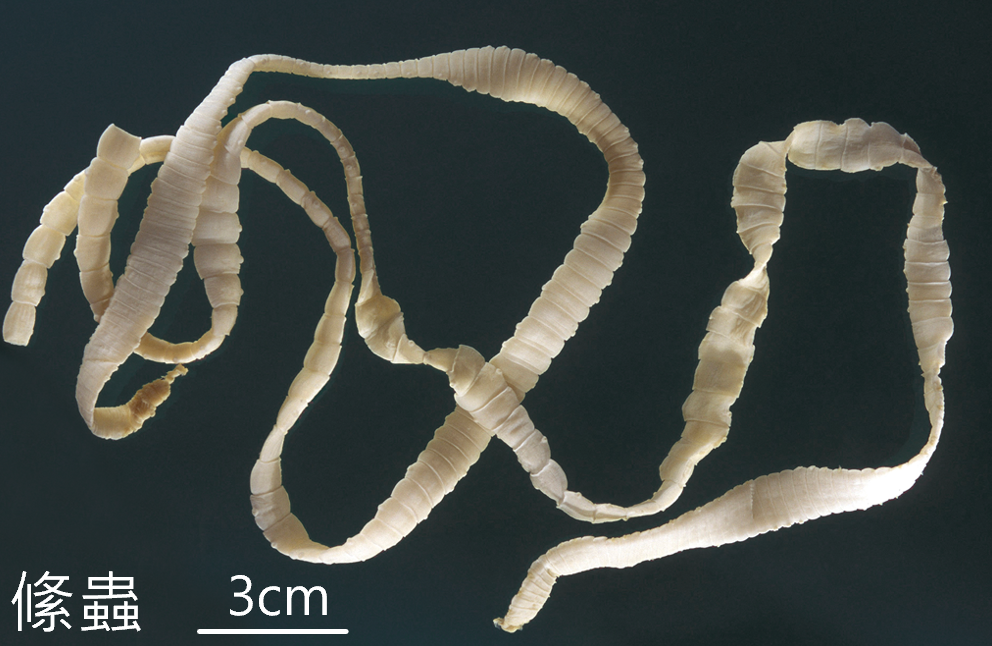
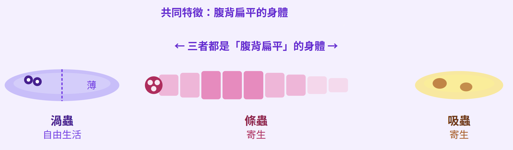

〰️ 薄薄的身體，兩種命運
扁形動物
觀察渦蟲、絛蟲與吸蟲，找出牠們共同的身體線索：腹背扁平、沒有骨骼，但具有神經。
學
學習內容
扁形動物的身體腹背扁平，沒有骨骼，但具有神經。
有些扁形動物可行斷裂生殖，例如渦蟲。
有些扁形動物會寄生於人體並引起疾病，例如絛蟲與吸蟲。
 〰️
〰️
🧵
🪱探索：身體特徵標註圖
先點選右側的特徵標籤，再點選渦蟲圖周圍的標註框，把正確的特徵放到正確位置。
已完成 0 / 4 個標註
請選擇特徵標籤
操作方式：先點一個標籤，再點左邊對應的標註框。答錯可以重新選，全部完成後會顯示總結。
請先點選一個特徵標籤，再到左邊完成標註。
小提醒：渦蟲是扁形動物的代表，重點是腹背扁平、沒有骨骼、具有神經，而且前端感覺通常較明顯。

補充觀察圖：搭配上方標註活動，觀察扁形動物的身體特徵。
觀察重點：看到「腹背扁平、沒有骨骼、可能斷裂生殖或寄生」，就要想到扁形動物門。
練
互動練習
1. 哪一項最符合扁形動物的主要特徵？
選擇題2. 翻開動物卡，選出所有扁形動物代表。
翻牌多選3. 點選所有屬於扁形動物的特徵。
多選任務4. 將代表動物配對到正確說明。
下拉式配對5. 渦蟲被切成兩半後，會發生什麼事？
選擇題6. 配對挑戰：把動物拖到正確的生活方式。
拖曳配對配對挑戰：把動物拖到正確的生活方式
互動 2
把左側三種動物，拖曳到右側對應的生活方式框中
行動裝置可先點動物，再點生活方式框
行動裝置可先點動物，再點生活方式框
🌊 自由生活・可再生
⚠️ 寄生・可能致病
完成並答對本頁所有題目後，才能前往下一頁。